Solo Exhibition
This project is presenting the biggest solo exhibition in my college years.
Acrylic
《Starry Sky》
Acrylic
53cmX45.5cm X3 · 2016
《Sunset Bloom》
Acrylic
27cmX35cm X9 · 2016
Composite Media
This series of works is a symbol of the current animal world. To me, the animal world is simple,
balanced, and colorful. We were taught since childhood that the animal world is colorful, but at
that time I saw the cruel and bloody world to these animals. The most heartbreaking thing is
that whether these animals are experiencing massacre or persecution by fire, their survival and
love for the next generation are still so innocent and ignorant.
Therefore, I chose to use bright colors to portray the encounters and beauty of animals. In the
exhibition, I chose to use a darker light to match the work. I hope that those who visit can pay
attention to the beautiful but bloody animal world in the corner of the world.
《Our Zoo》
Composite Media
100cmX80cm X1
72.5cmX60cm X2
65cmX53cm X1
53cmX45.5cm X2
35cmX27cm X2
2016
 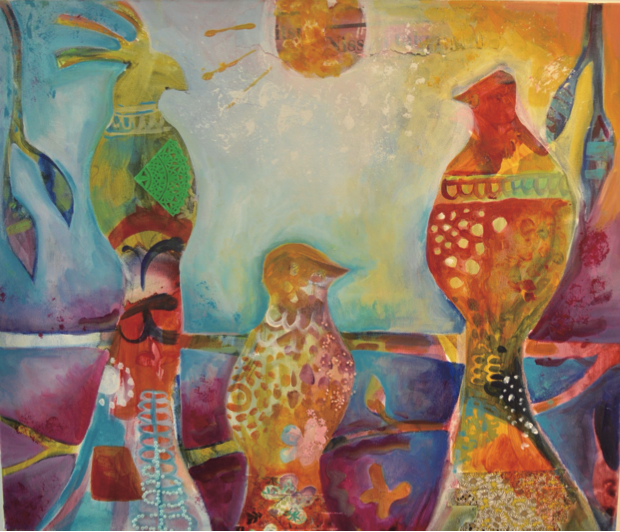
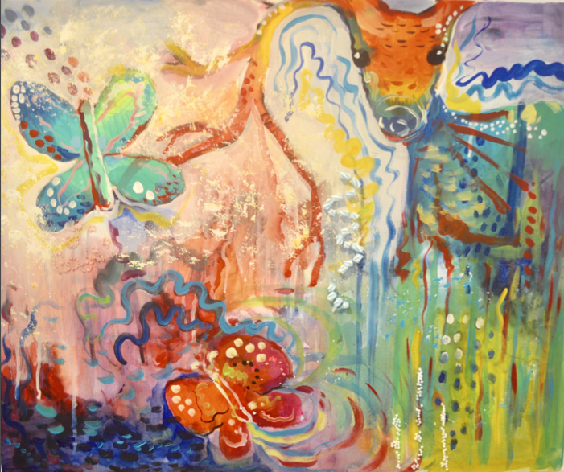
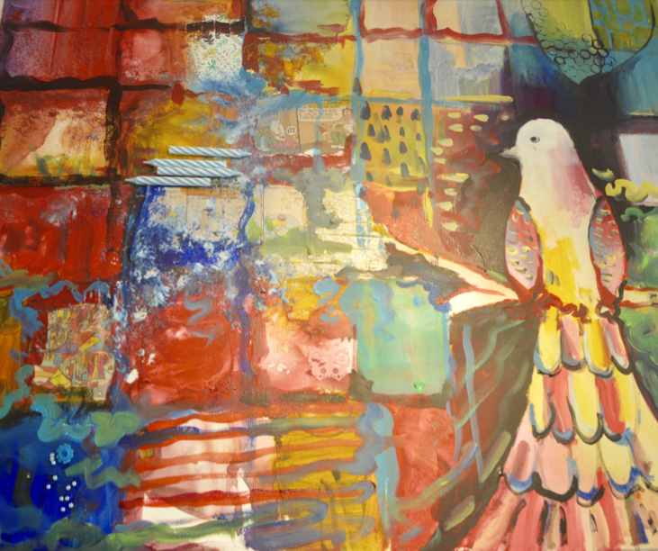
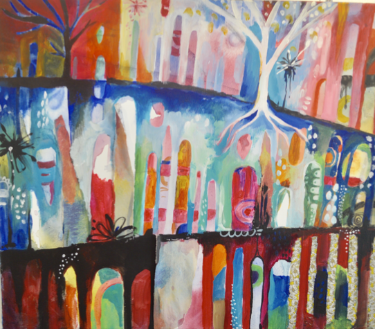
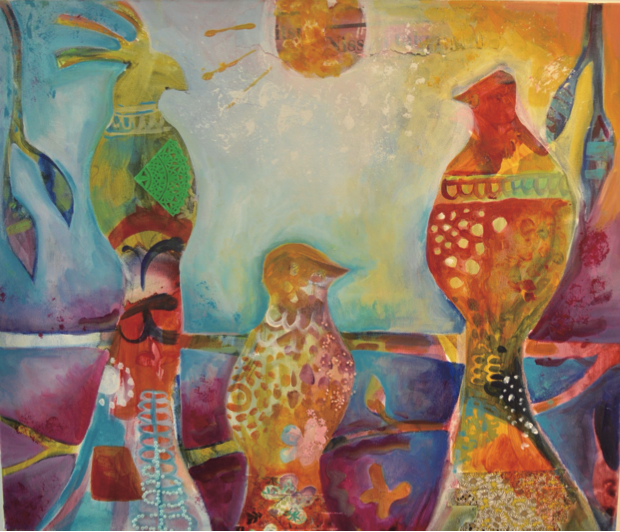
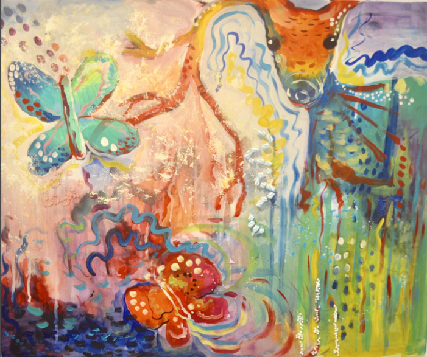
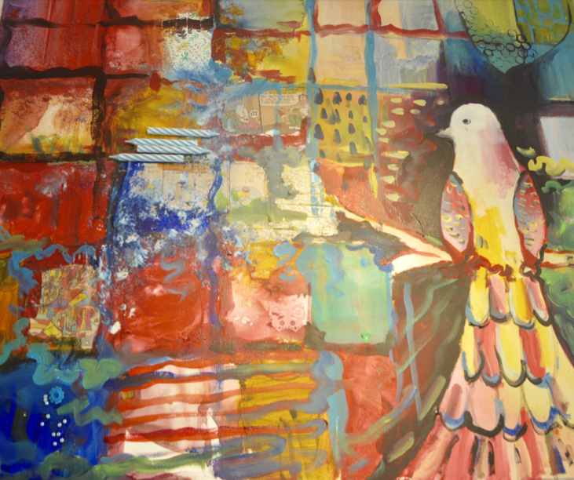
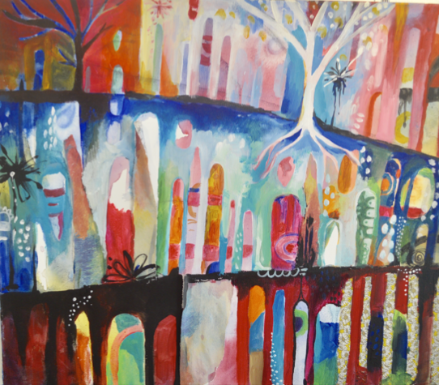
 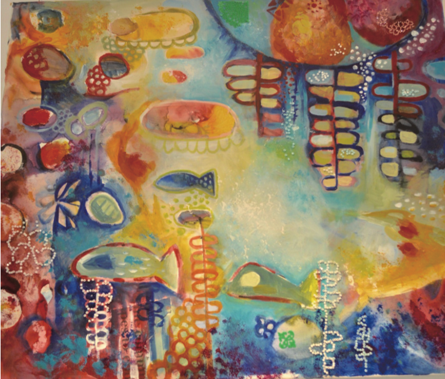
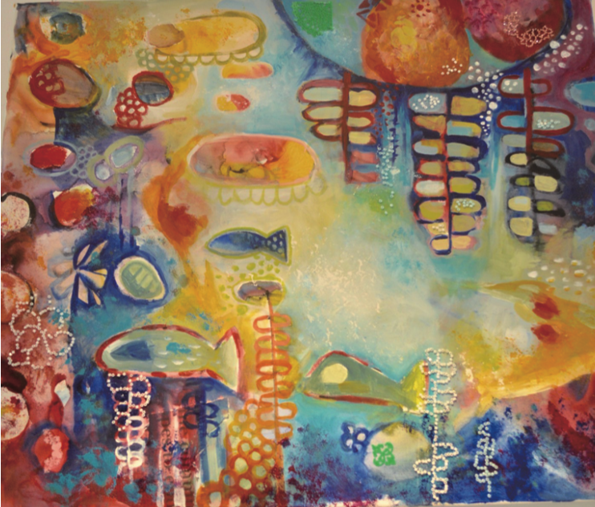
Chinese Calligraphy
This is my work that won the championship in the national competition. The font is the most common regular script in Chinese calligraphy and the cursive script demonstrates the personal style.
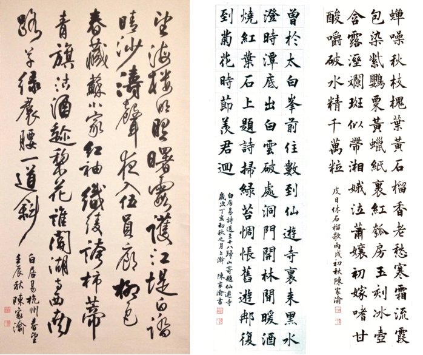Graphics Design
Bella Fairyland Logo Design · 2018
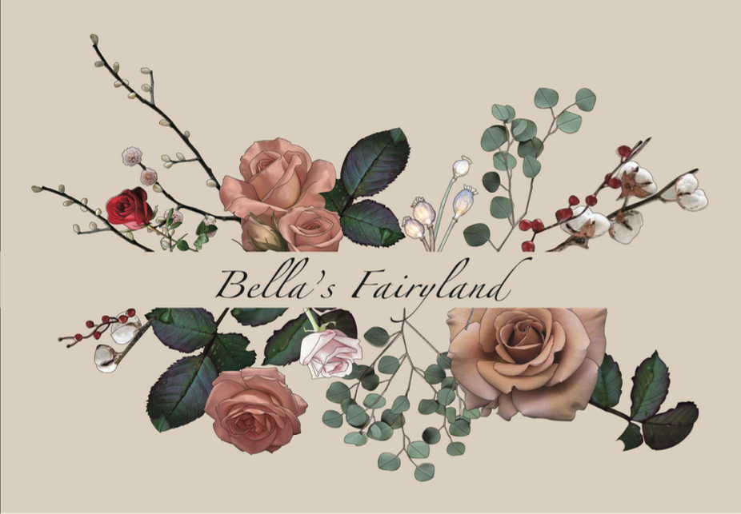 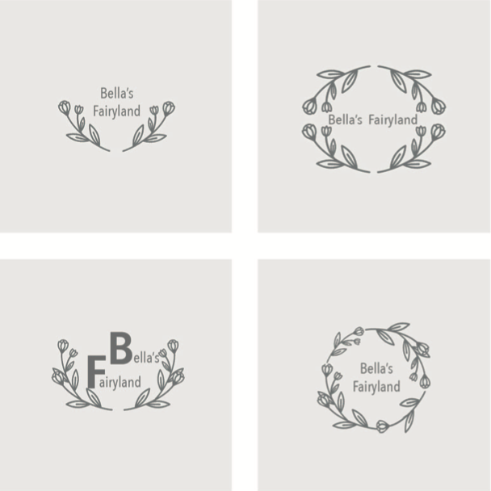Dinner party invitation card design · 2018
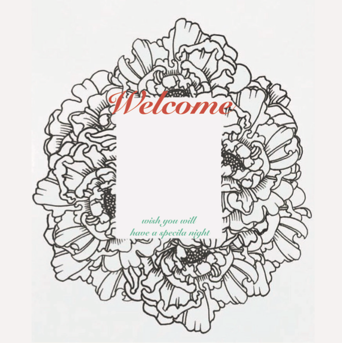Swimwear brand P&G event poster design · 2018

Youtuber image cover photo design · 2018
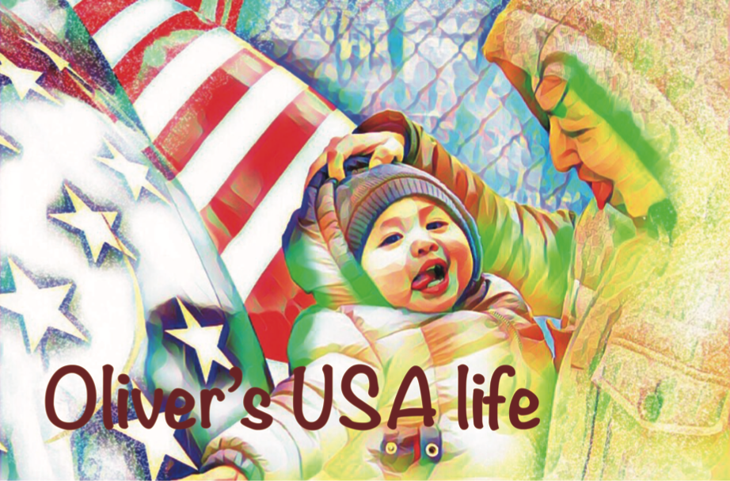Bathroom factory brand children's day postcard design · 2018
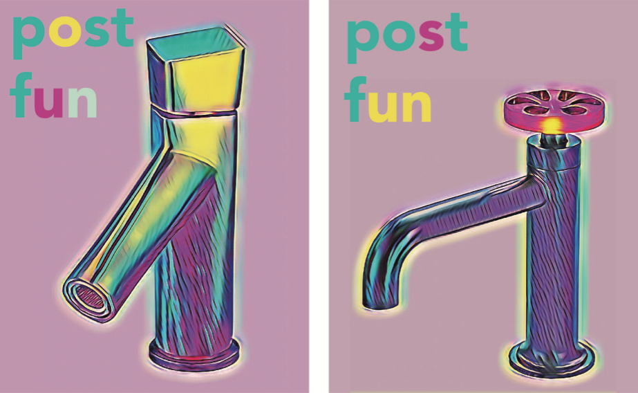Print/Etching Press
I chose three different themes of newspapers: caricatures, political issues, gossip... I hope we
can reflect on what we really think and fear when we read the text
“No one is afraid of heights, they're afraid of falling down.
No one is afraid of saying I love you, they're afraid of the answer...”
By Kurt Cobain Quote
《Opposite》
Print/Etching Press
29.7cmX42cm X3
2017
 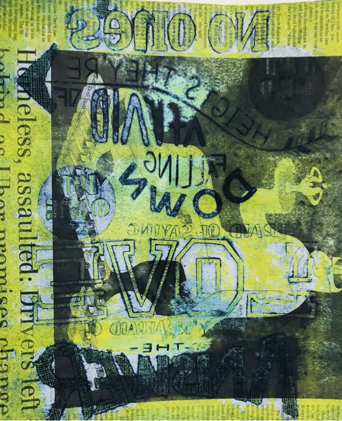
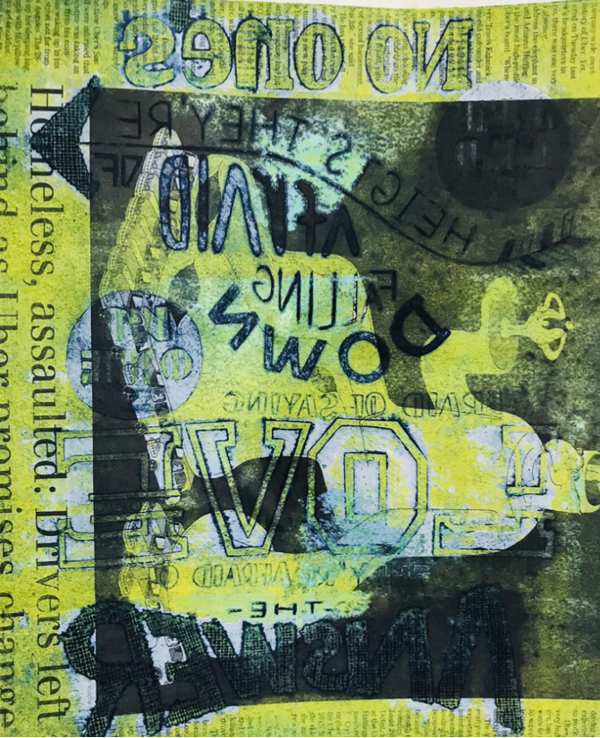
《Paper Pig》
Print/Etching Press
42cmX42cm
2017

《Devil Fruit》
Print/Etching Press
42cmX42cm
2017
Water Color
The character in the below painting is my mother. There are twelve works in this series, each represents the characteristics of the twelve constellations. I chose the most representative two, with the myth of Gemini in the background, and a symbol of the personality of my mother.
《Gene Amplification》
Composition: Photoshop / Finish: watercolor
42cmX59.4cm X2 · 2016
《Wither》
Composition: Photoshop / Finish: watercolor
21cmX29.7cm X3 · 2016
《Inheritance》
watercolor
42cm X 59.4cm · 2014